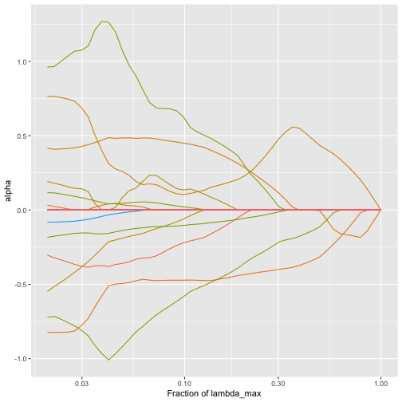

trac-m2 for classification: additional covariates, a second stage and inference
2026-10-09
Source:vignettes/trac-m2-classification.Rmd
trac-m2-classification.RmdThis vignette extends the trac classification
pipeline, which shows how to prepare the malawi data
for trac and compares trac with sparse
log-contrast models. Here we show the remaining steps of the trac-m
workflow for a binary outcome: additional non-compositional covariates
(trac-m), a second stage that expresses the model in terms of pairwise
log-ratios (trac-m2), and a third stage that estimates the effects of
the selected log-ratios on held-out data. The data are stool samples of
adults living in Malawi or Venezuela from Yatsunenko
et al. (2012), as prepared for the Microbiome
Learning Repo, and the task is to predict the country from the gut
bacteria and from the age and sex of the participants. For more on this
data set, see ?malawi, and for the first two stages with a
continuous response, see trac-m2 for
regression.
library(trac)
library(phyloseq)
library(tidyverse)
options(knitr.kable.NA = "")
malawi
#> phyloseq-class experiment-level object
#> otu_table() OTU Table: [ 5008 taxa and 54 samples ]
#> sample_data() Sample Data: [ 54 samples by 3 sample variables ]
#> tax_table() Taxonomy Table: [ 5008 taxa by 7 taxonomic ranks ]trac expects the two classes to be coded as -1 and 1. We
code the participants from Malawi as 1:
sample_info <- data.frame(malawi@sam_data)
y <- ifelse(sample_info$Var == "Malawi", 1, -1)
table(y)
#> y
#> -1 1
#> 33 21Aggregate to the genus level
malawi holds the counts of 5008 OTUs. As in the
classification pipeline, we build the tree and the matrix A
from the taxonomy table. Here we label the ranks without an assignment
(e.g. g__) as unclassified, so that the OTUs without a
genus assignment are pooled within their family instead of being
numbered one by one, and we sum the counts to the genus level with
aggregate_to_level, which keeps the example small.
x <- malawi@otu_table@.Data
tax <- malawi@tax_table@.Data
blank <- nchar(tax) == 3
tax[blank] <- paste0(tax[blank], "unclassified")
tax <- cbind(tax, OTU = rownames(tax))
for (i in 2:8) tax[, i] <- paste(tax[, i - 1], tax[, i], sep = "::")
tax <- as.data.frame(tax, stringsAsFactors = TRUE)
tree <- tax_table_to_phylo(~Kingdom/Phylum/Class/Order/Family/Genus/Species/OTU,
data = tax, collapse = TRUE)
A <- phylo_to_A(tree)
x <- x[, match(sub(".*::", "", rownames(A)), colnames(x))]
genus <- aggregate_to_level(x, y, A, tax, level = 6, collapse = TRUE)
x_genus <- as.matrix(genus$x)[, rownames(genus$A)]
A_genus <- genus$A
dim(x_genus)
#> [1] 54 272Preprocessing
The test set has two roles here: we compare the predictions of the models on it, and in the last section we use it to estimate the effects of the selected log-ratios. Since the data set is small, we keep half of the participants for testing.
Prepare the covariates
covariates <- data.frame(
age = sample_info$age,
male = ifelse(sample_info$sex == "unknown", NA, as.numeric(sample_info$sex == "male"))
)
covariates_tr <- covariates[tr, ]
covariates_te <- covariates[-tr, ]
for (v in names(covariates_tr)) {
med <- median(covariates_tr[[v]], na.rm = TRUE)
covariates_tr[[v]][is.na(covariates_tr[[v]])] <- med
covariates_te[[v]][is.na(covariates_te[[v]])] <- med
}
means <- colMeans(covariates_tr)
sds <- apply(covariates_tr, 2, sd)
covariates_tr <- as.data.frame(scale(covariates_tr, center = means, scale = sds))
covariates_te <- as.data.frame(scale(covariates_te, center = means, scale = sds))trac without the covariates
As a reference, we first fit trac on the microbiome
alone.
fit <- trac(ztr, ytr, A = A_genus, method = "classif", min_frac = 2e-2, nlam = 50)
cvfit <- cv_trac(fit, Z = ztr, y = ytr, A = A_genus)
#> fold 1
#> fold 2
#> fold 3
#> fold 4
#> fold 5
ibest <- cvfit$cv[[1]]$ibest
show_nonzeros <- function(x) x[x != 0]
show_nonzeros(fit[[1]]$alpha[, ibest])
#> 'k__Bacteria::p__Proteobacteria::c__Betaproteobacteria'
#> 0.1246306
#> 'k__Bacteria::p__Proteobacteria::c__Gammaproteobacteria::o__Enterobacteriales::f__Enterobacteriaceae'
#> -0.4717532
#> 'k__Bacteria::p__Proteobacteria'
#> 0.3593646
#> 'k__Bacteria::p__Bacteroidetes::c__Bacteroidia::o__Bacteroidales'
#> -0.1313935
#> 'k__Bacteria::p__Firmicutes::c__Bacilli::o__Bacillales'
#> -0.4902757
#> 'k__Bacteria::p__Firmicutes::c__Clostridia::o__Clostridiales::f__Clostridiaceae'
#> 0.3904130
#> 'k__Bacteria::p__Firmicutes::c__Clostridia'
#> 0.2190141
yhat_te <- predict_trac(fit, new_Z = zte)
pROC::auc(yte, yhat_te[[1]][, ibest])
#> Setting levels: control = -1, case = 1
#> Setting direction: controls < cases
#> Area under the curve: 0.9013Additional covariates (trac-m)
The covariates enter the classification model in the same way as in
regression: as ordinary linear terms that are not part of the zero-sum
constraint, with penalty weights set by
w_additional_covariates. We again use 0.1, as in the trac-m
paper.
fit_cov <- trac(ztr, ytr, A = A_genus, method = "classif",
additional_covariates = covariates_tr,
w_additional_covariates = rep(0.1, ncol(covariates_tr)),
min_frac = 2e-2, nlam = 50)
plot_trac_path(fit_cov)
We tune the model on the same folds as trac above:
cvfit_cov <- cv_trac(fit_cov, Z = ztr, y = ytr, A = A_genus,
additional_covariates = covariates_tr,
folds = cvfit$folds)
#> fold 1
#> fold 2
#> fold 3
#> fold 4
#> fold 5
ibest_cov <- cvfit_cov$cv[[1]]$ibest
alpha_cov <- fit_cov[[1]]$alpha[, ibest_cov]
show_nonzeros(alpha_cov)
#> 'k__Bacteria::p__Proteobacteria::c__Betaproteobacteria'
#> 0.08647364
#> 'k__Bacteria::p__Proteobacteria::c__Gammaproteobacteria::o__Enterobacteriales::f__Enterobacteriaceae'
#> -0.48665208
#> 'k__Bacteria::p__Proteobacteria'
#> 0.48195623
#> 'k__Bacteria::p__Bacteroidetes::c__Bacteroidia::o__Bacteroidales'
#> -0.16093954
#> 'k__Bacteria::p__Firmicutes::c__Bacilli::o__Bacillales'
#> -0.47491565
#> 'k__Bacteria::p__Firmicutes::c__Clostridia::o__Clostridiales::f__Clostridiaceae'
#> 0.40193058
#> 'k__Bacteria::p__Firmicutes::c__Clostridia'
#> 0.15214683
#> age
#> -0.08542366
yhat_te_cov <- predict_trac(fit_cov, new_Z = zte,
new_additional_covariates = covariates_te)
pROC::auc(yte, yhat_te_cov[[1]][, ibest_cov])
#> Setting levels: control = -1, case = 1
#> Setting direction: controls < cases
#> Area under the curve: 0.8947With the covariates, trac selects the same taxa and age,
but not sex. Here, age hardly changes the test AUC, since the bacteria
already separate the two countries well.
A second stage with covariates (trac-m2)
The second stage works as in the regression vignette:
second_stage forms all log-ratios between the taxa that
trac selected and runs a lasso on them, together with the
covariates that trac selected.
show_log_ratios <- function(log_ratios) {
nz <- show_nonzeros(log_ratios)
short <- function(x) {
x <- str_remove_all(x, "'")
as.character(ifelse(grepl("::", x), str_extract(x, "[^:]+::[^:]+$"), x))
}
parts <- str_split_fixed(names(nz), "///", 2)
tibble(numerator = short(parts[, 1]),
denominator = na_if(short(parts[, 2]), ""),
coefficient = unname(nz))
}
selected_covariates <- intersect(names(show_nonzeros(alpha_cov)), colnames(covariates_tr))
two_stage_cov <- second_stage(Z = ztr, A = A_genus, y = ytr, betas = alpha_cov,
additional_covariates =
covariates_tr[, selected_covariates, drop = FALSE],
w_additional = 0.1, method = "classif",
folds = cvfit$folds)
show_log_ratios(two_stage_cov$log_ratios) %>%
knitr::kable(digits = 2)| numerator | denominator | coefficient |
|---|---|---|
| o__Enterobacteriales::f__Enterobacteriaceae | k__Bacteria::p__Proteobacteria | -2.82 |
| p__Proteobacteria::c__Betaproteobacteria | c__Bacilli::o__Bacillales | 0.57 |
| c__Bacteroidia::o__Bacteroidales | o__Clostridiales::f__Clostridiaceae | -1.38 |
| c__Bacilli::o__Bacillales | o__Clostridiales::f__Clostridiaceae | -0.82 |
| age | -0.73 |
A positive coefficient means that a larger ratio of numerator to denominator points to Malawi. The rows without a denominator are covariates.
yhat_te_two_cov <- predict_second_stage(
new_Z = zte,
new_additional_covariates = covariates_te[, selected_covariates, drop = FALSE],
fit = two_stage_cov
)
pROC::auc(yte, yhat_te_two_cov)
#> Setting levels: control = -1, case = 1
#> Warning in roc.default(response, predictor, auc = TRUE, ...): Deprecated use a matrix as predictor. Unexpected results may be
#> produced, please pass a numeric vector.
#> Setting direction: controls < cases
#> Area under the curve: 0.9276Without covariates, the same function gives a second stage for the
microbiome-only trac model above (trac-2):
two_stage <- second_stage(Z = ztr, A = A_genus, y = ytr,
betas = fit[[1]]$alpha[, ibest],
method = "classif", folds = cvfit$folds)
yhat_te_two <- predict_second_stage(new_Z = zte, fit = two_stage)
show_log_ratios(two_stage$log_ratios) %>%
knitr::kable(digits = 2)| numerator | denominator | coefficient |
|---|---|---|
| p__Proteobacteria::c__Betaproteobacteria | o__Enterobacteriales::f__Enterobacteriaceae | 0.22 |
| o__Enterobacteriales::f__Enterobacteriaceae | k__Bacteria::p__Proteobacteria | -1.10 |
| p__Proteobacteria::c__Betaproteobacteria | c__Bacilli::o__Bacillales | 0.02 |
| c__Bacteroidia::o__Bacteroidales | o__Clostridiales::f__Clostridiaceae | -0.48 |
| c__Bacilli::o__Bacillales | o__Clostridiales::f__Clostridiaceae | -1.10 |
Comparing the models
n_taxa_ratios <- function(two_stage) {
ratios <- names(show_nonzeros(two_stage$log_ratios))
ratios <- ratios[grepl("///", ratios)]
c(taxa = length(unique(unlist(strsplit(ratios, "///")))),
log_ratios = length(ratios))
}
n_cov <- function(two_stage) {
sum(names(show_nonzeros(two_stage$log_ratios)) %in% colnames(covariates_tr))
}
fit_glm <- glm(malawi ~ ., family = binomial(),
data = cbind(malawi = as.numeric(ytr == 1), covariates_tr))
scores <- list(trac = yhat_te[[1]][, ibest],
"trac-2" = yhat_te_two,
"covariates only (logistic regression)" =
predict(fit_glm, newdata = covariates_te),
"trac-m" = yhat_te_cov[[1]][, ibest_cov],
"trac-m2" = yhat_te_two_cov)
tibble(
model = names(scores),
taxa = c(sum(fit[[1]]$alpha[, ibest] != 0), n_taxa_ratios(two_stage)["taxa"], 0,
sum(alpha_cov[seq_len(ncol(A_genus))] != 0),
n_taxa_ratios(two_stage_cov)["taxa"]),
log_ratios = c(NA, n_taxa_ratios(two_stage)["log_ratios"], NA, NA,
n_taxa_ratios(two_stage_cov)["log_ratios"]),
covariates = c(0, 0, ncol(covariates_tr), length(selected_covariates),
n_cov(two_stage_cov)),
test_auc = sapply(scores, function(score) {
as.numeric(pROC::auc(response = yte, predictor = as.numeric(score)))}),
test_error = sapply(scores, function(score) mean(sign(score) != yte))
) %>%
knitr::kable(digits = c(0, 0, 0, 0, 2, 2))
#> Setting levels: control = -1, case = 1
#> Setting direction: controls < cases
#> Setting levels: control = -1, case = 1
#> Setting direction: controls < cases
#> Setting levels: control = -1, case = 1
#> Setting direction: controls < cases
#> Setting levels: control = -1, case = 1
#> Setting direction: controls < cases
#> Setting levels: control = -1, case = 1
#> Setting direction: controls < cases| model | taxa | log_ratios | covariates | test_auc | test_error |
|---|---|---|---|---|---|
| trac | 7 | 0 | 0.90 | 0.22 | |
| trac-2 | 6 | 5 | 0 | 0.91 | 0.19 |
| covariates only (logistic regression) | 0 | 2 | 0.75 | 0.37 | |
| trac-m | 7 | 1 | 0.89 | 0.22 | |
| trac-m2 | 6 | 4 | 1 | 0.93 | 0.11 |
The bacteria predict the country much better than age and sex do, and adding age changes little.The second stages keep a high AUC with a few log-ratios: trac-m2 uses four log-ratios and age.
Inference on held-out data
The coefficients of the second stage are shrunken by the lasso, and
the log-ratios were selected with the same data, so the coefficients are
not estimates of the effects of the log-ratios.The third stage of the
trac-m workflow estimates these effects on observations that were not
used to select the log-ratios, here the test set. We compute the
selected log-ratios on the test set from the log geometric means of the
taxa, as second_stage does, and, as in the trac-m paper,
fit an unpenalized logistic regression with these log-ratios alone.
confint gives 95% profile-likelihood confidence
intervals.
selected <- names(show_nonzeros(two_stage_cov$log_ratios))
is_ratio <- grepl("///", selected)
log_geom_te <- sweep(as.matrix(zte %*% A_genus), 2, Matrix::colSums(A_genus), "/")
index <- two_stage_cov$index[match(selected[is_ratio], two_stage_cov$index$log_name), ]
log_ratios_te <- log_geom_te[, index$index1, drop = FALSE] -
log_geom_te[, index$index2, drop = FALSE]
colnames(log_ratios_te) <- paste0("ratio_", seq_len(ncol(log_ratios_te)))
stage3_data <- data.frame(malawi = as.numeric(yte == 1), log_ratios_te)
fit_stage3 <- glm(malawi ~ ., family = binomial(), data = stage3_data)
ci <- confint(fit_stage3)
stage3 <- show_log_ratios(two_stage_cov$log_ratios) %>%
filter(!is.na(denominator)) %>%
select(numerator, denominator) %>%
mutate(estimate = coef(fit_stage3)[-1], lower = ci[-1, 1], upper = ci[-1, 2])
stage3 %>%
knitr::kable(digits = 2)| numerator | denominator | estimate | lower | upper |
|---|---|---|---|---|
| o__Enterobacteriales::f__Enterobacteriaceae | k__Bacteria::p__Proteobacteria | 0.95 | -3.58 | 7.72 |
| p__Proteobacteria::c__Betaproteobacteria | c__Bacilli::o__Bacillales | 3.52 | -1.10 | 11.36 |
| c__Bacteroidia::o__Bacteroidales | o__Clostridiales::f__Clostridiaceae | -4.97 | -15.11 | -0.86 |
| c__Bacilli::o__Bacillales | o__Clostridiales::f__Clostridiaceae | 0.87 | -2.98 | 6.38 |
e log-ratios selected in the training set and are not adjusted for multiple testing. With 27 held-out participants and log-ratios that share taxa, they are wide, which shows the price of the third stage: the observations used for inference cannot be used for training. The results also come from a single split of a small data set and will change from split to split.